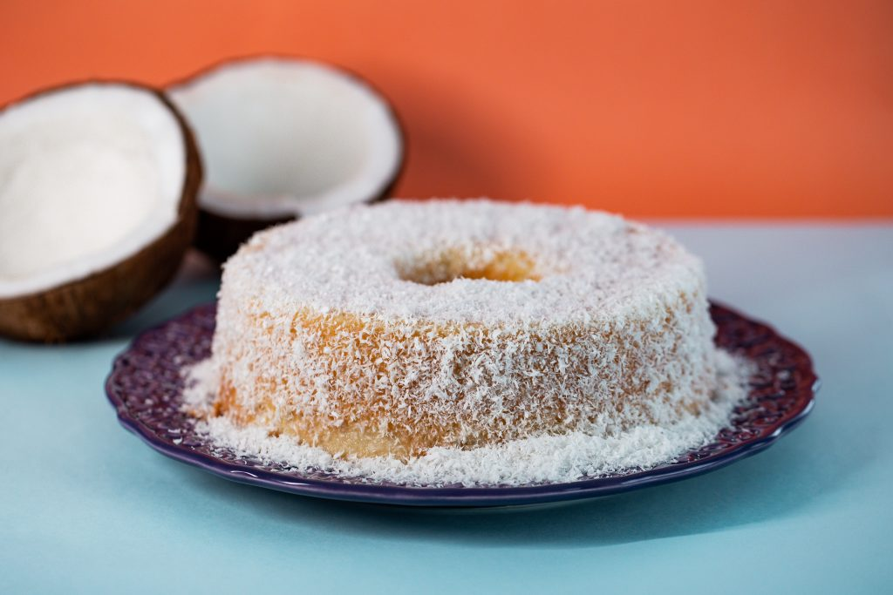

Bolo de Coco
Esse é o bolo de coco, acompanhameto perfeito para quem ama esse sabor e as raspinhas de coco ralado. Vai bem com qualquer tipo de café.
Ingredientes:
- 3 ovos
- 1 xícara de leite
- 1 xícara de açúcar
- 1/2 xícara de óleo
- 1 xícara de coco ralado
- 2 xícaras de farinha de trigo
- 1 colher de sopa de fermento em pó
Modo de Preparo:
- Preaqueça o forno a 180°C.
- Em uma tigela, bata os ovos, o açúcar e o óleo até obter um creme claro.
- Adicione o leite e misture bem.
- Adicione a farinha, o coco e o fermento e misture até obter uma massa homogênea.
- Despeje a massa em uma forma untada e enfarinhada.
- Leve ao forno por cerca de 30 a 35 minutos, ou até que, ao enfiar um palito, ele saia limpo.
- Retire do forno, deixe esfriar um pouco e desenforme.